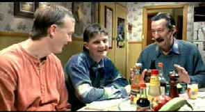

|
Castle, The/B-,D |
|
Miramax/1997/84m/ANA 1.85 |
Let’s
deliver the worst news first. The Castle is a travesty of a
transfer, with such soft focus it is actually difficult to watch
and enjoy. It’s
worth a recall. The good news is The Castle is an entertaining
film, small in scope and of limited ambition that stays on
course like a 747 making a three-point landing.
 |
|
Dad regales the boys about work. ©Miramax |
A family living in a community located on the
edge of an airport runway are oblivious to the sounds of the
planes, to the diminished value of their homes. This is their
little bit of paradise. Dad is forever chipper, making the best out
of every situation. until the important one, that is. He’s
proud of his daughter who has earned a degree from
beautician school; he is forever exchanging banter with one son
over the cost of items in a local trading paper
In the tradition of tight little comedies,
The Castle keeps its focus on the straight and narrow. This
is the classic little guy against the corporate giant tale, but the
twist is the strange behavior of the little guys in The
Castle.
Aside from
the abominable focus, colors on the DVD are very pleasing. The
transfer is bright. The Dolby Digital 5:1 sound is clear and the
accented dialogue is fairly easy to understand.
The Feature
Archive has articles
ranging from John Ford to Blonde
Bimbos, The
Heistmasters, Akira
Kurosawa and Frank
Darabont.

Click on the image above to learn more about the effect of
an actor's voice on his screen persona.
Check out the Movie
Poster Archive
for short bios and images of Susan Hayward, Kirk Douglas,
Katharine Hepburn and many more. This month's featured star
is Clark
Gable.
Imaging
Science Foundation
The Imaging
Science Foundation promotes proper standards in home theater
viewing. ISF trained technicians offer monitor calibration
services to consumers. The difference in a properly
calibrated monitor can be astounding. Click on the image to find
an ISF member near you.
HOT
LINKS
DVD
Verdict
They
may be judgmental, but that's the point, isn't it. Lots of DVD
reviews plus news and more
The
Home Theater Forum
Looking for
lively and helpful exchanges on home theater, DVD, movies. Visit
this friendly site and get a hardy welcome.Home
Theater Reference Reviewing System
When you read a DVD review it's of utmost importance to know
what equipment is being used to evaluate quality. Click on the
projectors to find out more.